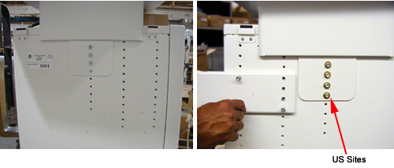

Your site may have different requirements and you may have to adjust the monitor top and/or keyboard table top up or down from this position.
Always select a table top height that permits the operator to see the patient on the table.
Keep the one bolt-hole relationship between the monitor top and the keyboard table top. Fasten the keyboard table top one (1) hole lower than the console table top ( Illustration 8).
Illustration 8: Global Console Tabletop Adjustments
